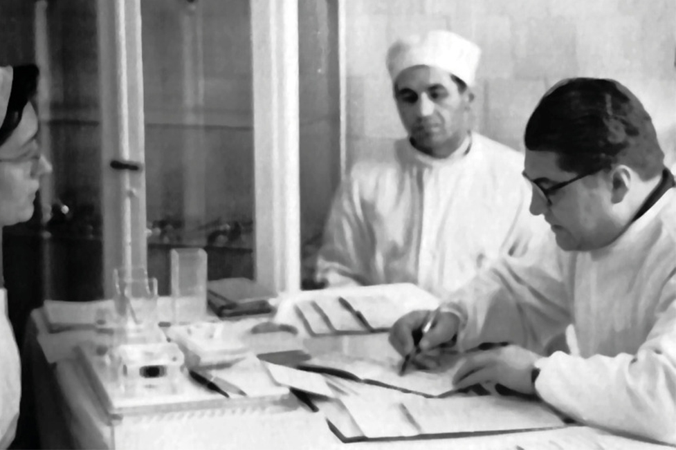
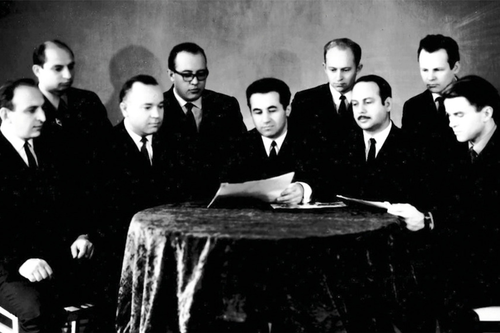

Михайлов Сергей Сергеевич
Это краткая биография, которая проходит по основным этапам его жизни
Сергей Сергеевич Михайлов родился 5 декабря 1919 года в Новгороде в простой рабочей семье.
Окончил он 38 школу и сразу решил поступить на лечебный факультет первого Ленинградского медицинского института ныне санкт-петербургский медицинский университет имени Ивана Петровича Павлова.
Первые годы службы он принимал участие в боевых действиях как военный медик войск Балтийского флота в ходе героической обороны Ленинграда.
Одновременно по совместительству в 1953-1958 годах он работал секретарем редколлегии журнала «Вестник хирургии им. И.И. Грекова» и внештатным редактором Ленинградского отделения издательства

С.С. Михайлов. Энергичный, волевой руководитель, обогащенный опытом Военно-медицинской академии, он очень много успел сделать за неполных 4 года своего руководства.
В августе 1963 г. профессор С.С. Михайлов был переведен в Москву для работы начальником Главного управления учебными заведениями Министерства Здравоохранения РСФСР (ГУУЗа Минздрава РСФСР).
С марта 1964 г. по 1993 г. жизнь и деятельность С.С. Михайлова связана с кафедрой нормальной и топографической анатомии Московского медицинского стоматологического института им. Н.А. Семашко (ММСИ).
Конференция по стоматологической анатомии, в которой приняли участие все ведущие анатомические школы и коллективы медицинских институтов СССР, работающих по данной проблематике. И термин «стоматологическая анатомия» был принят и утвержден

Перечень дел С.С. Михайлова венчает создание в 1976 г. по его инициативе и при его активном участии Всероссийского научного общества анатомов, гистологов и эмбриологов, формирование его структуры и руководящих органов, проведение пленумов правления и Всероссийских съездов общества.
250
Научных работ
8
Монографий
45
Кандидатских диссертаций
10
Докторских
20
Государственных наград
Перечень его работ
Михайлов Сергей Сергеевич выпустил огромное количество работ и внес большой вклад в развитие медицины как науки

«Артерио-венозные сонно-пещеристые аневризмы»
В 1959 г. С.С. Михайлов защитил докторскую диссертацию на тему «Артерио-венозные сонно-пещеристые аневризмы»
Атлас сосудов мозга
В 1979 г. вышел атлас сосудов мозга С.С. Михайлова и Д.Б. Бекова
«Медицинская газета»
Минздрава РСФСР. С 1978 г. по 1982 г. С.С. Михайлов – главный редактор «Медицинской газеты»
«Анатомия человека» для студентов-стоматологов»
Под руководством Сергея Сергеевича был издан первый в СССР учебник «Анатомия человека» для студентов-стоматологов»
Галерея
Фотографии из личного архива Сергея Сергеевича Михайлова
Во время учебно-методической конференции зав. кафедрами оперативной хирургии и топографической (клинической) анатомии медвузов РСФСР (1987 г.).
На открытии 1-го Всероссийского съезда анатомов, гистологов и эмбриологов (1982 г.)
В Ташкенте в дни VIII Всесоюзного съезда анатомов, гистологов и эмбриологов (1974 г.).
Проф. С.С. Михайлов, доц. И.И. Каган, асп. В.А. Вотинцев со студенческой группой IV курса (1962 г.).
Альбом ВМА
Участники 2-го Пленума правления ВНОАГЭ и конференции по венозной системе на площади у памятника В.И. Ленину в Оренбурге (1977 г.).
Выездное заседание президиума правления ВНОАГЭ в Оренбурге (1980 г.)
Работали

Алла Борисовна Гурьева
"Преподаватель Анатомии"
Доктор медицинских наук (2019), доцент по кафедре анатомии человека (2004)
Алена Александровна Осинская
Преподаватель "Лечебное дело"
Заведующий курсом нормальной анатомии кафедры НиПАОХсТА и СМ,Член Лиги «Женщины-ученые Якутии».
Сотников Андрей Владимирович
Студент МИ СВФУ 2 курс СТО-19
Музыкант, позитивный и просто хороший парень
© 2020 СТО-19 Сотников Андрей МИ